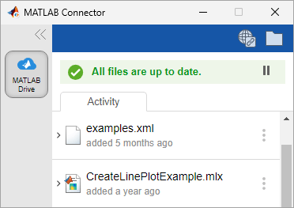
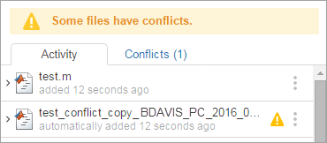
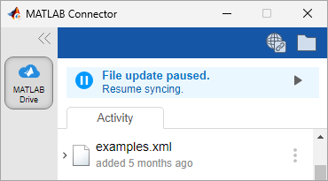

Use MATLAB Connector to Manage Your Files
You can use MATLAB® Connector to manage your MATLAB Drive™ files on your local computer. To get started, start the Connector if it is not running and then open the Connector window. In the Connector window, you can view Connector status and recent file activity, resolve file conflicts, and manage file syncing.
To install the Connector if it is not already installed on your system, see Install MATLAB Connector for MATLAB Drive.
Start MATLAB Connector
If MATLAB Connector is not running, you can start it from within MATLAB or from your operating system. When you start the Connector, it starts syncing your MATLAB Drive files.
To start the Connector from within MATLAB, in the Current Folder toolbar, click the MATLAB
Drive icon  .
.

To start the Connector from your operating system:
Windows® — In the Start menu, select MATLAB Connector. If you see a security alert when you start MATLAB Connector, select Allow access to continue.
macOS — Navigate to ~/Applications in Finder, and double-click MATLAB Connector.
Linux® — Execute
~/bin/MATLABConnector startin a terminal window.
Open MATLAB Connector
To open MATLAB Connector, follow these steps:
Windows — Go to your system notification area, and click the MATLAB Connector icon .
macOS — Go to your menu bar and in the status area, click the MATLAB Connector icon
 .
.Linux — Execute
~/bin/MATLABConnector togglein a terminal window.
View Status and Notifications
MATLAB Connector shows the status of your MATLAB Drive files and of your network connection at the top of the Connector window. If you enable notifications, MATLAB Connector also displays its status in the Windows system notification area or the macOS menu bar.
This table describes the possible Connector statuses.
| Status Icon | Description |
|---|---|
| Files are up to date. |
| File updates completed with a condition that could require action. |
| File updates failed. Your files are not up to date. |
| File syncing is paused. Resume syncing to ensure files remain up to date. |
| MATLAB Connector could not connect to the network. File syncing is paused. |
To manage notifications, in the bottom-left corner of the window, click the Settings
button  . Then, in the MATLAB Drive tab of the
MATLAB Connector Settings window, you can choose to show all, recommended, or no
notifications.
. Then, in the MATLAB Drive tab of the
MATLAB Connector Settings window, you can choose to show all, recommended, or no
notifications.
View Recent File Activity
You can view a list of recently synced files in the Activity
section of the Connector window. To view the status of an individual file, select the file
in the list to expand its details. To open a file, click the actions button
 to the right of the file and select
Open.
to the right of the file and select
Open.

Manage File Conflicts and Sync Issues
File conflicts can occur if you access your MATLAB Drive data from either multiple machines or a combination of MATLAB Connector and another access method; for example, MATLAB Drive online, MATLAB Mobile™, or MATLAB Online™.
When you restart the Connector, MATLAB Drive compares an edited file with the same file in cloud storage. If the content is different, MATLAB Drive renames the local version of the file. The name of the copied file has the following text appended to the file name:
conflict_copy_machinename_date

To resolve the conflict, compare the two versions, and decide which one you want to
keep. You can merge the changes manually, or delete the version of the file you do not want.
If you decide to keep both versions of the file, you can remove the alert icon by clicking
the actions button  to the right of the conflicting file and selecting
Dismiss alert.
to the right of the conflicting file and selecting
Dismiss alert.
File Sync Issues
These conditions can affect file syncing:
| Issue | Description |
|---|---|
A file is larger than 5 GB. | Smaller files continue to sync. |
You exceed your MATLAB Drive quota. | Syncing stops. Remove files from your MATLAB Drive to free up space. |
Connection to MATLAB Drive is interrupted. | Syncing stops until the connection is restored. |
Filename contains unsupported characters. | Other files continue to sync. Rename files that have names with unsupported characters. Follow the requirements for your operating system when naming files. |
You do not have permission to access files in the MATLAB Drive folder. | Syncing does not occur. You are logged in to the computer as a user who does not have permission to access the local MATLAB Drive folder. Log in as a user who has permissions to access the folder, or change the permission on the folder. |
Manage File Syncing
When MATLAB Connector is running, it automatically syncs the files in your MATLAB Drive folder with files on the cloud. You can pause and resume file syncing from the Connector window.
To temporarily stop the syncing of your MATLAB Drive files (for example, if you are on a metered or slow internet connection), you can pause syncing. When syncing is paused, you can continue to access and edit the local copies of your files in the MATLAB Drive folder on your computer. When you resume syncing, MATLAB Drive automatically syncs your changes.
To pause syncing, click the Pause syncing button to the right of the status. To resume syncing, click Resume syncing under the status or the Resume syncing button to the right of the status.

Stop MATLAB Connector
To stop syncing your MATLAB Drive files for an extended period of time, stop MATLAB Connector. After stopping MATLAB Connector, you can continue to access and edit the local copies of your files in the MATLAB Drive folder on your computer. When you restart MATLAB Connector, your files sync automatically.
To stop MATLAB Connector, click the Exit button in the bottom-left corner of the window. On Windows, you also can right-click the MATLAB Connector icon in the Windows system notification area and select Exit. On Linux, you also can execute ~/bin/MATLABConnector stop in a
terminal window.